STORY
旅の人からの手紙で、世界のパンの旅へ
いろどり村に色が戻ったあと。パン屋の看板むすめ・ミミが、自分の小さなパン屋を開きました。
旅の人がくれた手紙には「わたしの国のパンも、焼いてみませんか?」。屋台から町いちばんのベーカリーへ。そして、世界のパンをめぐる旅へ。
国ごとに、町の景色・お店の見た目・お客さんの服・曲が変わります。着いた国では、その国のパン職人がむかえてくれます。
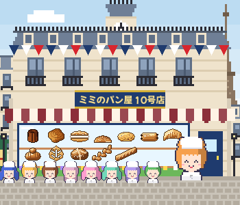
フランスのお店(ミミのパン屋 10号店)
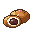
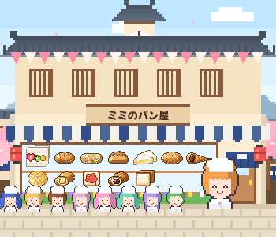
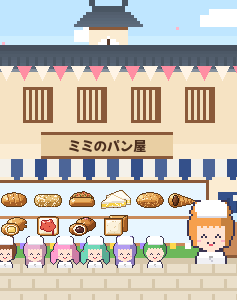
パン屋さん経営ゲーム
いろどり村のミミが、自分の小さなパン屋を開きました。タップと放置でパンを焼いて、日本からフランスまで10の国へ。世界のパンをめぐる旅に出かけよう。
App Store で入手 無料STORY
いろどり村に色が戻ったあと。パン屋の看板むすめ・ミミが、自分の小さなパン屋を開きました。
旅の人がくれた手紙には「わたしの国のパンも、焼いてみませんか?」。屋台から町いちばんのベーカリーへ。そして、世界のパンをめぐる旅へ。
国ごとに、町の景色・お店の見た目・お客さんの服・曲が変わります。着いた国では、その国のパン職人がむかえてくれます。

フランスのお店(ミミのパン屋 10号店)
日本 → 中国・アジア → 東南アジア → インド・中東 → 中南米 → アメリカ → イギリス → ドイツ → イタリア → フランス。
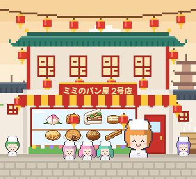
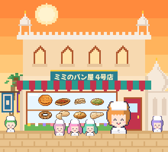
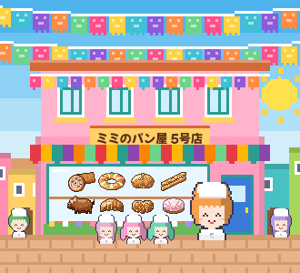
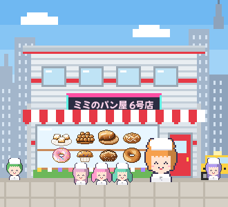
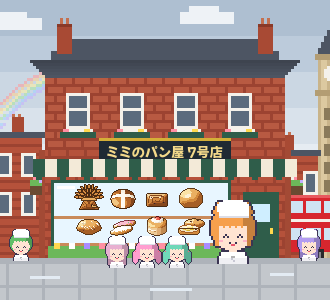
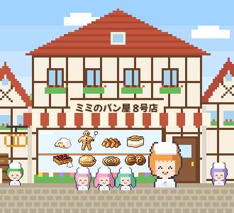
← よこにスクロールできます →
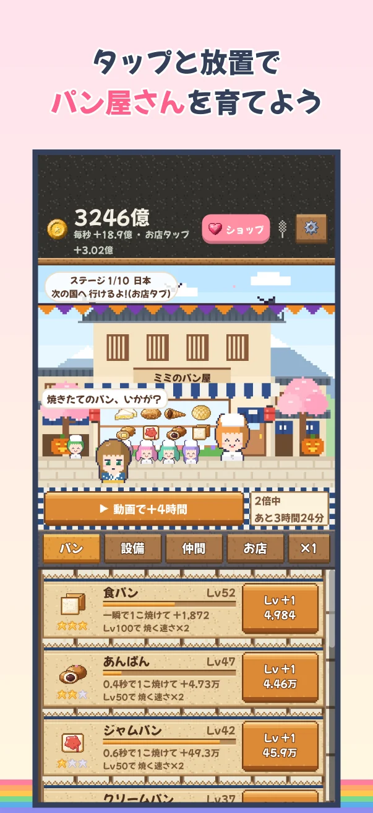
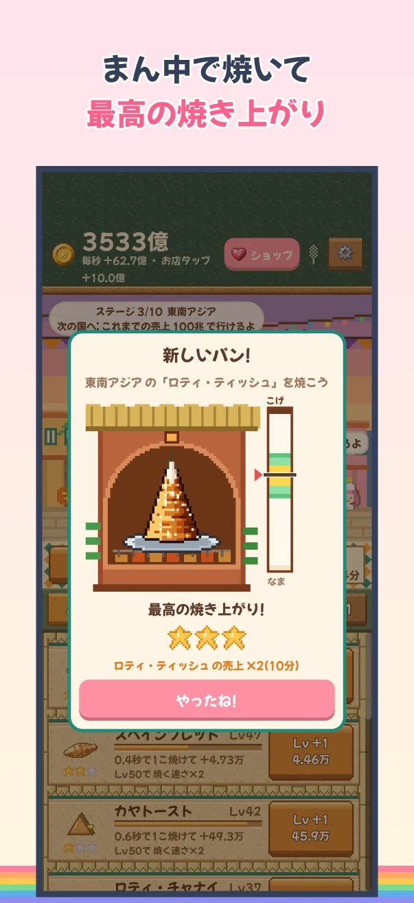
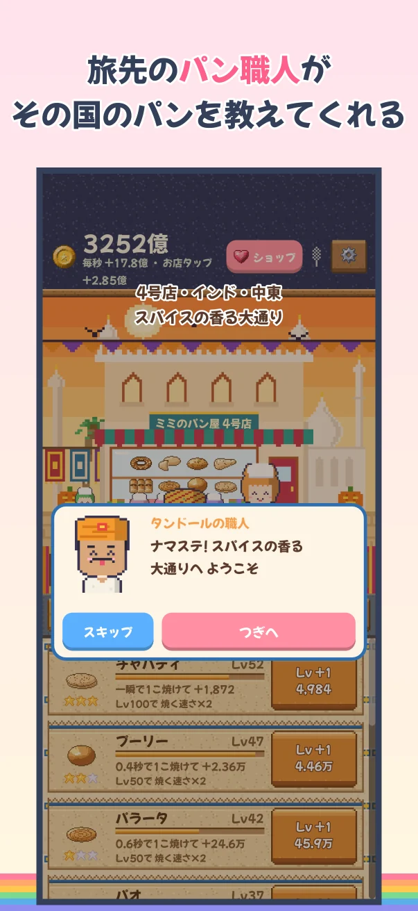
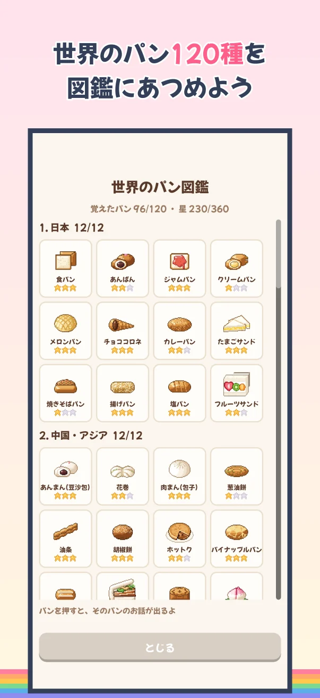
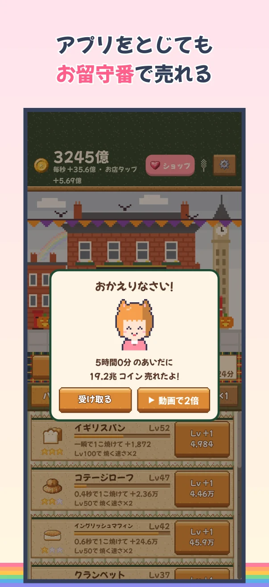
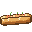
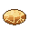
POINT
1回1〜5分。すきま時間に、のんびり遊べます。
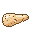
HOW TO PLAY
むずかしい操作はありません。
PRICE & ADS
遊ぶ前に知っておきたいことを、正直に書いておきます。
Q&A
ほかに困ったことはサポートへどうぞ。
基本無料です。買い切りのアイテムと、見たいときだけの動画があります。
出ません。全画面の広告やバナーはなく、動画は自分で「動画で売上2倍」を押したときだけです。
広告なしパックは、動画を見なくても売上がずっと2倍になります。繁盛パックは、売上がずっと2倍(タップ・お留守番の売上も)。両方あると、売上はずっと4倍です。
ゲームのデータは iCloud にも保存されます。同じ Apple Account なら、新しい iPhone でもデータが戻ります。買ったものは「せってい」の「ショップ・購入を復元」からもどせます。
どちらも、いろどり村の世界のゲームです。ミミとぽこの物語は『ぽこのいろどりマルシェ』へつづきますが、どちらから遊んでも楽しめます。
いまは iPhone 版だけです(iOS 15 以上)。
GAMES
どのゲームも「いろどり村の世界」でつながっています。どこからでもどうぞ。